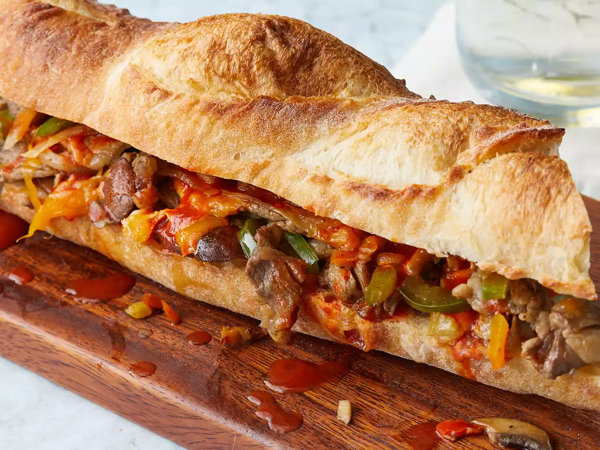

Steak Sandwich

Description
This steak sandwich recipe is as good as the takeout sub shops of
Southeastern Massachusetts! I think this is about as close as you can get
at home. Freezing the steak the day before makes it easy to cut into very
thin slices.
Ingredients
- 2 tablespoons butter, divided
- ¼ medium onion, sliced
- 4 large fresh mushrooms, sliced
- ¼ green bell pepper, sliced into long strips
-
1 (1/2 pound) well-marbled beef steak of any type, sliced as thinly as
possible
- 3 tablespoons chopped pickled hot peppers
- 1 teaspoon hot pepper sauce
- salt and pepper to taste
- 2 slices sharp Cheddar cheese
- ⅓ French baguette, cut in half lengthwise